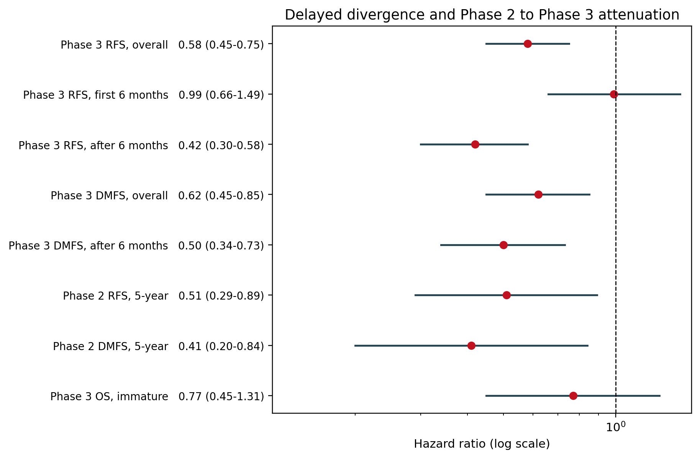
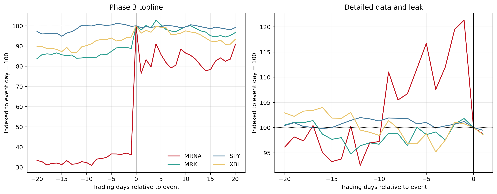

The endpoint was met.
INTerpath-001 randomized 1,137 patients. The combination reduced the hazard of recurrence or death by 42% (RFS HR 0.58) and distant metastasis or death by 38% (DMFS HR 0.62). Overall survival is still immature.
Evidence audit · Melanoma · 2026
A fully sourced, reproducible audit of the Moderna–Merck mRNA melanoma vaccine: the positive Phase 3 trial, the 42 claims swirling around it, and the $44 billion market move that followed.
The 60-second brief
The clinical result, the timing of the benefit, and the stock reaction are related but not interchangeable. Keeping them separate is the whole point.
INTerpath-001 randomized 1,137 patients. The combination reduced the hazard of recurrence or death by 42% (RFS HR 0.58) and distant metastasis or death by 38% (DMFS HR 0.62). Overall survival is still immature.
The first six months look flat (RFS HR 0.99). After month six, the hazard ratio falls to 0.42. The average effect is real, but it hides a sharp time dependence that matters for how the result is described.
August: +176.97% on the topline. October: −17.57% on a leak and disclosure shock, even though the full data were positive. A price move can tell you what was expected, not what was true.
Start here
No biology or finance background required. These four ideas are enough to read every number in the repository.
The clinical signal
The trial met both primary endpoints. The most important scientific question is not “does it work?” but “when does the benefit appear, and how much survived Phase 3?”

At a median follow-up of 24.6 months, two-year RFS was 82.2% versus 70.0%, and two-year DMFS was 88.5% versus 80.2%. Those are real absolute gains: roughly one additional recurrence-free patient for every 8.2 treated.
But the first six months show essentially no separation. The benefit is concentrated after month six, when the piecewise RFS hazard ratio falls to 0.42. The observed pattern is consistent with an adaptive immune response that takes time to mature; the trial was not designed to prove that mechanism.
What the average hides: first-six-month RFS HR 0.99 (0.66–1.49); post-six-month RFS HR 0.42 (0.30–0.58). The ratio is 0.424—a 57.6% lower hazard after month six. That is a description of the observed data, not proof of a six-month biological switch.
The market signal
Two information events, two very different reactions. The second one is the most useful lesson in the repository: a negative price move is not a negative endpoint.
19 August 2026 · topline
Close-to-close move on the positive Phase 3 topline. Volume was 33.5× the prior 60-day median; market value rose by about $44.48B.
22 October 2026 · leak + full data
Close-to-close move on the detailed-data day. The full release was positive, but the market had priced a much larger surprise.

The one-line interpretation: the October selloff was a disclosure and expectations shock, not evidence that the vaccine failed. The full data were positive; UBS called it “overall a strong data set” while pointing to “massive expectations.”
The claim ledger
Every proposition is graded against a source record. “Supported” means the claim matches the evidence; it does not mean every official statement is scientifically true.
Loading claims…
Current totals: 18 supported, 14 partially supported, 10 unsupported, 0 not verifiable. The full 42-row ledger, with evidence notes and source IDs, is in claims.csv.
Learn by doing
Eight questions, three levels. No memorization—just interpretation. You will know more than most interview candidates by the end.
What you can do with it
The repository is designed to be read, taught, cited, and reused. The code is MIT-licensed; the evidence trail is auditable.
Separate the clinical result from the market narrative in one page, with the underlying evidence one click away.
See raw returns, market-model CARs, placebo inference, and abnormal volume without confusing price with efficacy.
28 byte-for-byte source snapshots, SHA-256 manifests, and a claim-by-claim verdict ledger make fact-checking faster.
Use the primer, claim explorer, and quiz to teach evidence literacy, clinical statistics, and market interpretation.
Copy the structure for any company or sector: source registry, claim ledger, event study, financial reconstruction, tests.
Python, deterministic outputs, 26 tests, Docker, and offline snapshots. Rebuild every table and figure from committed data.
Open the hood
The analysis is offline-capable. The committed snapshots, manifests, and price files are enough to regenerate the tables and figures without a network connection.
$ python -m venv .venv
$ source .venv/bin/activate
$ pip install -e .
$ make all
# pipeline + 26 tests + manifest/result verifier
$ docker compose run --rm lab make all
# containerized reproductionThe pipeline writes processed prices and returns, every results table, all six figures, the machine-readable summary, and updated SHA-256 manifests. A non-zero verifier exit means the artifact is not reproducible.
Guardrails: 26 passing tests, 28 source snapshots, 6 price files, deterministic figures, and a verifier that checks manifest integrity and key numerical invariants.